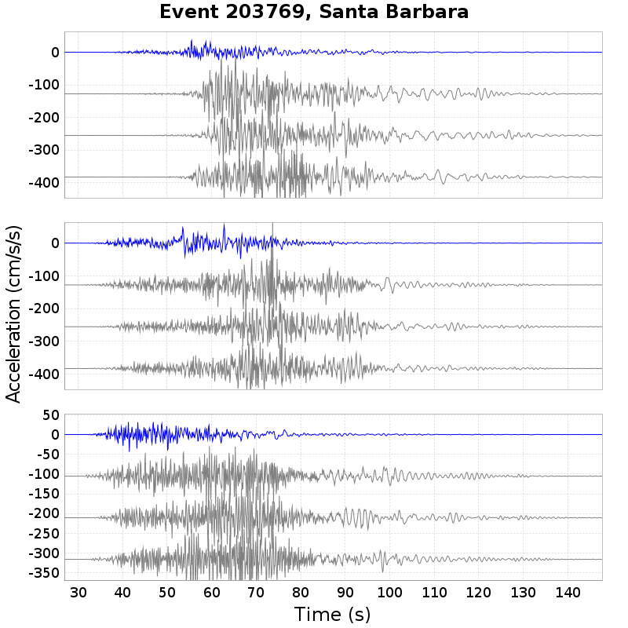
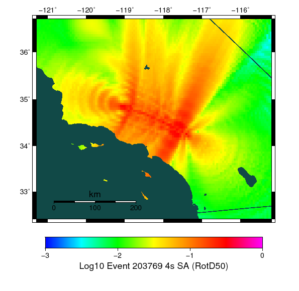
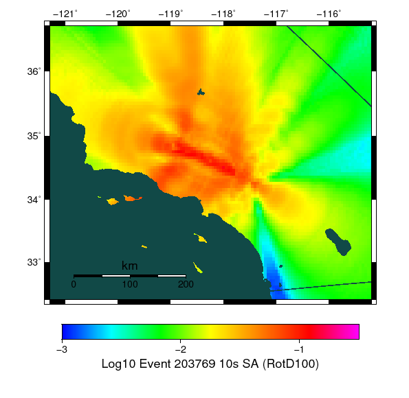

{kind=link}

Graves & Pitarka (2015) Simulations: 200 per site
Legend
Click here to view Slip/Velocity Animation
Location: 34.0192, -118.286
| Distance | Actual RSQSim Surface | BBP Equivalent Planar Surface | GMPE Surface |
|---|---|---|---|
| Horizontal | 46.92 km | 55.33 km | 60.07 km |
| 3-D | 47.84 km | 55.33 km | 60.07 km |
NOTE: RSQSim ruptures sometimes have a few co-rupturing elements on faults some distance from the main rupture. This may cause discrepancies in the table above, consult rupture map plot.
RSQSim ruptures in blue. Gray seismograms are Graves & Pitarka (2015) comparisons.
RSQSim ruptures in blue. Gray seismograms are Graves & Pitarka (2015) comparisons.
Location: 34.064987, -117.29201
| Distance | Actual RSQSim Surface | BBP Equivalent Planar Surface | GMPE Surface |
|---|---|---|---|
| Horizontal | 5.05 km | 20.94 km | 20.49 km |
| 3-D | 11.64 km | 20.94 km | 20.49 km |
NOTE: RSQSim ruptures sometimes have a few co-rupturing elements on faults some distance from the main rupture. This may cause discrepancies in the table above, consult rupture map plot.
RSQSim ruptures in blue. Gray seismograms are Graves & Pitarka (2015) comparisons.
RSQSim ruptures in blue. Gray seismograms are Graves & Pitarka (2015) comparisons.
Location: 34.05, -118.25
| Distance | Actual RSQSim Surface | BBP Equivalent Planar Surface | GMPE Surface |
|---|---|---|---|
| Horizontal | 42.18 km | 50.88 km | 55.53 km |
| 3-D | 43.21 km | 50.88 km | 55.53 km |
NOTE: RSQSim ruptures sometimes have a few co-rupturing elements on faults some distance from the main rupture. This may cause discrepancies in the table above, consult rupture map plot.
RSQSim ruptures in blue. Gray seismograms are Graves & Pitarka (2015) comparisons.
RSQSim ruptures in blue. Gray seismograms are Graves & Pitarka (2015) comparisons.
Location: 33.95, -117.4
| Distance | Actual RSQSim Surface | BBP Equivalent Planar Surface | GMPE Surface |
|---|---|---|---|
| Horizontal | 18.19 km | 31.99 km | 31.35 km |
| 3-D | 21.15 km | 31.99 km | 31.35 km |
NOTE: RSQSim ruptures sometimes have a few co-rupturing elements on faults some distance from the main rupture. This may cause discrepancies in the table above, consult rupture map plot.
RSQSim ruptures in blue. Gray seismograms are Graves & Pitarka (2015) comparisons.
RSQSim ruptures in blue. Gray seismograms are Graves & Pitarka (2015) comparisons.
Location: 32.7, -117.15
| Distance | Actual RSQSim Surface | BBP Equivalent Planar Surface | GMPE Surface |
|---|---|---|---|
| Horizontal | 144.89 km | 172.33 km | 171.73 km |
| 3-D | 145.15 km | 172.33 km | 171.73 km |
NOTE: RSQSim ruptures sometimes have a few co-rupturing elements on faults some distance from the main rupture. This may cause discrepancies in the table above, consult rupture map plot.
RSQSim ruptures in blue. Gray seismograms are Graves & Pitarka (2015) comparisons.
RSQSim ruptures in blue. Gray seismograms are Graves & Pitarka (2015) comparisons.
Location: 34.45, -119.7
| Distance | Actual RSQSim Surface | BBP Equivalent Planar Surface | GMPE Surface |
|---|---|---|---|
| Horizontal | 72.78 km | 72.98 km | 73.56 km |
| 3-D | 73.58 km | 72.98 km | 73.56 km |
NOTE: RSQSim ruptures sometimes have a few co-rupturing elements on faults some distance from the main rupture. This may cause discrepancies in the table above, consult rupture map plot.
RSQSim ruptures in blue. Gray seismograms are Graves & Pitarka (2015) comparisons.

RSQSim ruptures in blue. Gray seismograms are Graves & Pitarka (2015) comparisons.
| SA Period | RSQSim | NGAWest_2014_NoIdr | Ratio |
|---|---|---|---|
| 1.0 s | |||
| 2.0 s | |||
| 3.0 s | |||
| 4.0 s |  | ||
| 5.0 s | |||
| 7.5 s |  | ||
| 10.0 s |
| SA Period | RotD50 | RotD100 | RotD100/RotD50 Ratio |
|---|---|---|---|
| 1.0 s | |||
| 2.0 s | |||
| 3.0 s | |||
| 4.0 s |  |  | |
| 5.0 s |  | ||
| 7.5 s | |||
| 10.0 s |  |